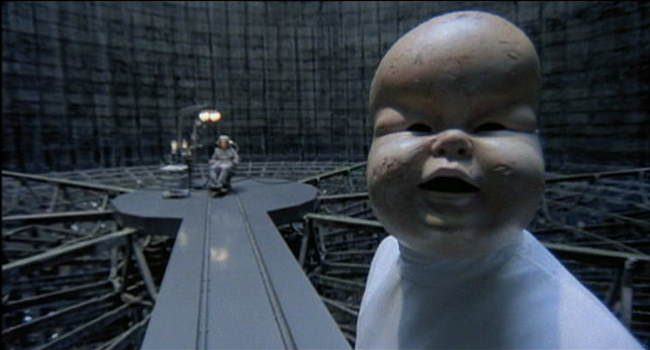
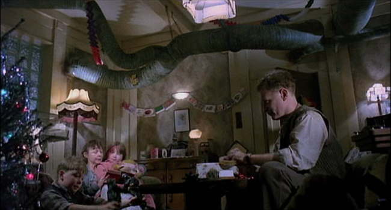
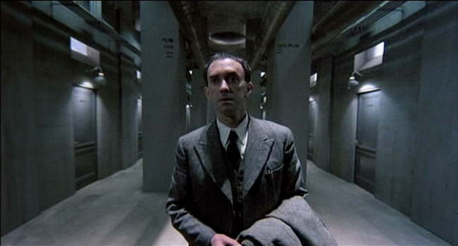
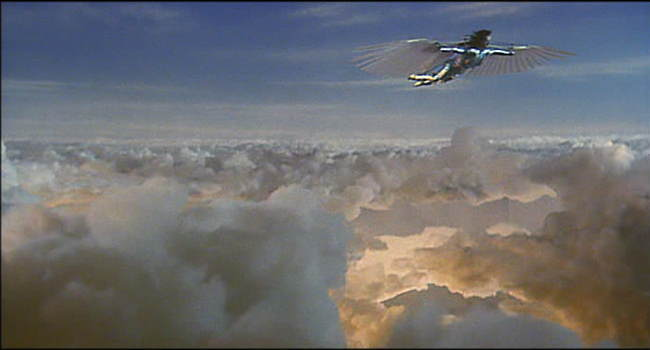
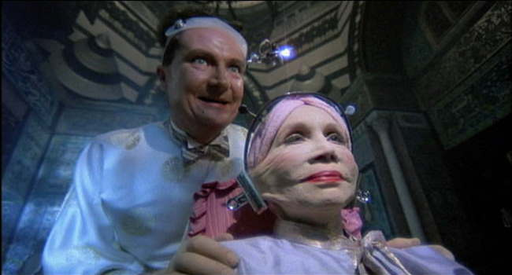
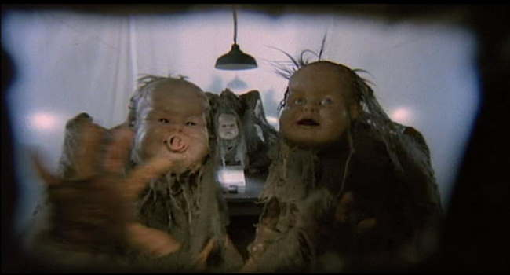
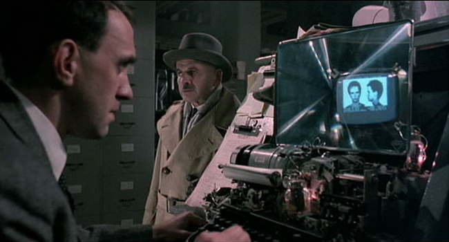
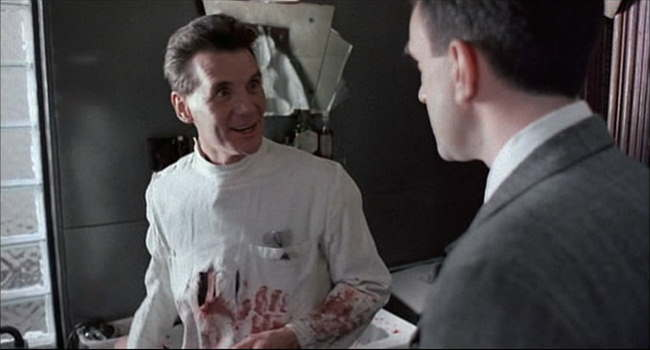
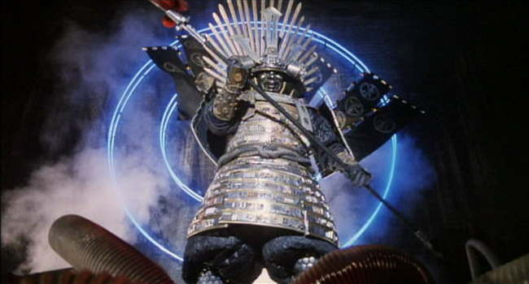
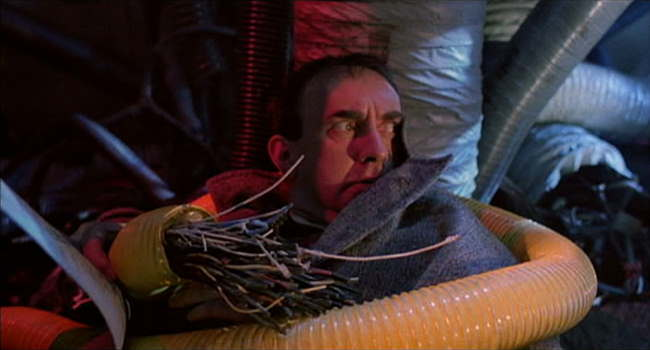

Movie review by : SFAM
Year : 1985
Directed by : Terry Gilliam
Written by : Terry Gilliam, Tom Stoppard & Charles McKeown
Degree of Cyberpunk visuals : High
Correlation to Cyberpunk themes : High
Rating : 10/10
Key cast members :

Overview: Terry Gilliam describes Brazil as "Franz Kafka meets Walter Middy" - this sort of fits. Using the name of Arry Barroso's 1930s escapist song, Brazil is set in a nightmarish, fantasized dystopic future, Gilliam gives us a story about humanity attempting to escape reality by retreating into one's own dreams. This is all the more interesting given the enormous fights Terry Gilliam had to engage in with Universal to even get the picture (in a non-bastardized form) released. Brazil is a visual and thematic tour-de-force which deserves a watch by all who are interested in having movies provoke deep thoughts, long after the film has concluded.

The Setting: Brazil takes place in a fantasized dystopic future where runaway, controlling, technocratic bureaucracy that has invaded all aspects of daily life. Arcane forms with incoherent instructions are required to do anything, but the goal is always completeness and finality over actual results. Appearances are everything in Brazil ? actual human relationships are a luxury most do without. Humans survive in this world by keeping their "real" selves bottled up inside as a cocoon, while overtly they serve their role as a specific cog in the system. Keep the desk clean, the expensive suit pressed and your family looking perfect and you'll be alright. Continually we see non-human responses to horrific disasters. In one restaurant scene, half the patrons have been blown up by a bomb, but the maître d' is far more concerned with hiding the destruction from his elite patrons by erecting a pleasant backdrop than he is in helping those horribly injured.

The Story: Sam Lowry (played wonderfully by Jonathan Pryce), our hero, from the beginning adapts to the system, but separates his "true" self in his dreams. Sam works as a minor cog in a the massively large bureaucracy called the Ministry of Information. The Ministry of Information eats up 7% of the total GDP in its pursuit of society's subversive elements, including the terrorists, who randomly bomb the rich and wealthy throughout the movie. Even though Sam comes from a prominent family with connections, he wants nothing to do with career advancement. Sam long ago gave up aspirations, and only wants to get through life unnoticed - until the love of his dream life appears in the real world. Sam throws everything else aside in order to meet up with this chick, but unfortunately, the "system" and even his own preconceptions continually get in the way. As the story unfolds, we see the bureaucracy in action in what becomes a struggle of freedom and individuality against the technological domination of humanity.

The Visuals: Brazil is a visually powerful movie. In its more sedate moments, Brazil starts off as a noir-ish style setting with 40s style suits and hats, tall squared buildings, computers driven by typewriters and dark lighting from above. But very quickly, Brazil changes to a surreal experience, which shoes converted to hats, ventilation pipes dominating every roomscape, and massive expansive buildings without ground floors. Ventilation pipes are Gilliam's symbol for technology run rampant. Massively tall buildings are symbols for bureaucratic power. Throughout, dark gray is the dominating color. Visually, the world of Brazil is decidedly bleak ? more bleak in fact than humanity can overcome.

The Sound: Brazil's score fully encapsulates the ambiance that Gilliam is expressing. We have high flowing orchestral pieces, cheesy, squeaky monophone songs, marches that integrate type-writers as the rhythm section, and all sorts of diversity that captures the quirky, bittersweet feel that Brazil often conveys. The continually harsh, metallic sound FX also highten the ambiance. What we are left with is a wonderful meshing of visuals and sound as a backdrop for the wonderful performances throughout.

The Cast: One of Gilliam's real skills in Brazil is taking an extremely large cast, filled with potentially interesting roles, and making them all meaningful. Continually, Brazil provides us a stream of totally interesting role players that add to the quirky universe that is this fantasized future. Robert De Niro is terrific as Harry Tuttle, a heat engineer-turned anarchist revolutionary. Michael Palin plays a terrific best friend and torturer, and Katherin Helmond plays a totally wierd, excentric but powerful mother. There are a number of other unique roles, including Ian Holm who plays a terrific cowardly, conniving boss, and Bob Hoskins as a slighted and crazed heat engineer. Jonathan Pryce is absolutely superb as the lead, and Kim Greist plays an interesting counter-point love interest. All in all, the roles come across as entirely memorable.

Dream Trapped Inside of a Nightmare: On the "Making of" segment of the Criterion Edition, Brazil is described as a dream trapped inside of a nightmare by star Jonathan Pryce. Pryce's character, Sam Lowry, dreams the ultimate dream of happiness. In his dream, he is a fantasy warrior with angel wings who fights the denizens of the deep to rescue his idealized damsel in distress. In reality though, every aspect of his life is a nightmare. The "system" that is the bureaucracy, in an attempt to root out the terrorists, has extended its omnipresent tentacles into every aspect of life. At best, Lowry's idealized reality involves being un-noticed by anyone. Unfortunately, once he discovers his idealized mate in real life, he can no longer remain obscure. He risks everything in a failed attempt to transform his dream into reality. In the end, Brazil shows how the depths of humanity can be crushed in a dystopic future where individuality and human rights become completely subservient to societal "welfare."

Use of Information: In Brazil, the collection and storage of information is paramount. While Brazil takes place in a dystopic future, computers have never advanced past arcane mainframes. The notion of usability, or people-centric computing is an anathema to the world of Brazil. The horror of horrors for the bureaucracy is finding a piece of paper without a home, or even worse, acknowledging that the "mistake" that caused this out of place paper belongs in your department! In Brazil, the fact that a person dies and a family is destroyed by this paperwork glitch is completely beside the point. In fact, the Samurai warrior character (see below) that Lowry fights in his dreams is fully comprised of computer parts ? information and computers are indeed the ultimate evil for humanity.

Terror As a Means of Extracting Information: One of the really interesting notions in Brazil that resonates today is the idea that the government engages in torture as a means of extracting information about potential terrorists. The throwaway comments from Sam, who has bought into this world, indicates that the choice HAS to be between this invasive government and sheer anarchy. When brought to the level of the individual, one has the sense that little by little, the government in Brazil slowly invaded individual freedoms as a way of combating the terrorists. The clear impression though is one of ever escalating acts ? as the government becomes more invasive, the anarchic responses become more extravagant. De Niro's character, the heroic anarchist heating engineer, represents this history of society, and humanity's ultimate response.

Is Brazil Cyberpunk? Due to the fantasy elements we see in Brazil, it's hard to refer to it as a straight cyberpunk movie. While the dream sequences aren't an issue, the dystopic future clearly isn't supposed to represent an actual near-term future ? it's a fantasized version of issues currently playing out in society today. Still, the message of invasive technology and dominating totalitarian control destroying humanity is rarely done better than we see in Brazil. And while Brazil is wonderfully quirky, it's the ending that truly feels like a cyberpunk film. Here we get both common cyberpunk visuals and philosophy in every sense of the word. The ending especially mimics many other cyberpunk films, where...
Throughout the last half of the film, Sam's perception of reality becomes more and more governed by perceptions from his dream world. His actions leading to his final arrest are based on a perceptual mix of fantasy with reality. At the end, Sam is seems to make the conscious choice to disavow the real world in favor of his internally constructed fantasy. In this sense, Sam has finally attained the freedom he long sought after. Interestingly, a very similar approach is also used at the end of Save the Green Planet.

The Bottom Line: The world of Brazil is steeped in a runaway, controlling, technocratic bureaucracy that has its tentacles in every part of humanity. The ducts dominate every room, including the family household living room at the beginning. To humanity, the message is clear ? "Your actual lives must be adapted to suit OUR needs, not yours; freedom now only exists in your own dreams." In the end we are shown the myth of a free man in a tightly controlled society ? the only freedom we ultimately possess is within our own perceptions ? that is the only source where salvation can be found. Visually, Brazil is simply stunning. The story is incredibly creative, the acting is great (especially De Niro and Pryce) and the dialogue is terrific. Furthermore, your Gilliam's wonderful sense of humor seeps out of every pore in this movie - such as the notion that the information retrieval department never retrieves any information. In short, Brazil is movie worthy of high praise.